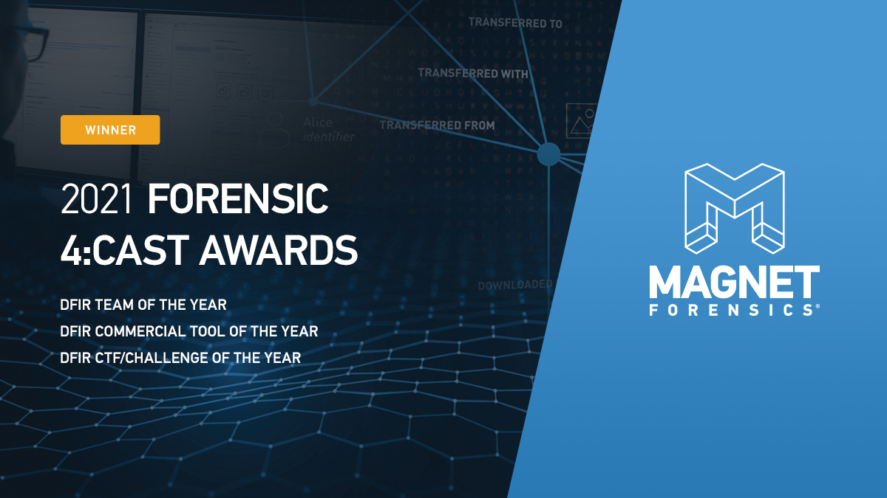

ABOUT EMPLOYER
Magnet Forensics was launched by former police officer Jad Saliba and former BlackBerry employee Adam Belsher in 2011. Jad had been working in the police force for years, but had to drop out when he was diagnosed with cancer. After his recovery, Jad was reassigned to the digital forensics team, where he noticed the software being used to solve cases at the time had a lot of room for improvement.
Outside of work, Jad developed his own digital forensics software and shared his programs with co-workers and others in the field. Seeing the massive impact his programs had on bringing justice to a multitude of criminal cases, Jad partnered with Adam, who was already an accomplished businessman, and together they built their own digital forensics company.
Today, Magnet Forensics is a highly reputable company that’s growing at a fast pace. It was included on the Canadian Business’ Growth 500 List for 2016, 2017, and 2019, and during my work term this fall, the company successfully acquired a U.S. based video-evidence firm called DME Forensics for an upfront price of 6.75 million U.S. dollars. Magnet Forensics has won many awards in the digital forensics field, some including:

- DFIR Team of the Year (2019, 2020, 2021)
- DFIR Commercial Tool of the Year (2019, 2020, 2021)
- DFIR CTF/Challenge Award (2021)